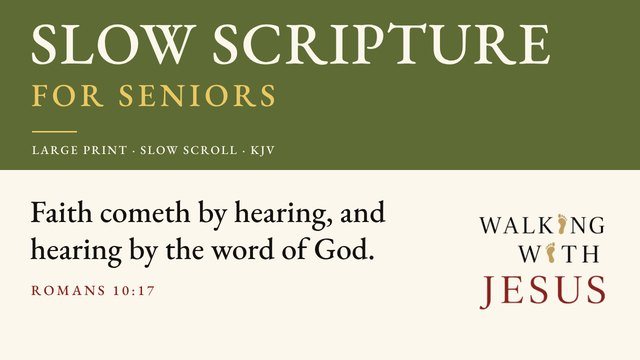

The whole story of Jesus, in order.
The words of the King James Bible scroll slowly across your screen in large letters while they are read aloud. Just sit back, watch and listen. New episodes release daily, Monday through Friday, for ten weeks until the season ends.

How to watch and keep it on your phone
- Tap this button:▶ Watch on YouTubeThe YouTube app opens. If it asks, tap Open.
- Tap the plus (+)This saves it, so you can find it again.
- Tap "Play all"Then sit back and listen.
To come back later
Open the YouTube app. Tap You at the bottom right, then tap Slow Scripture for Seniors under Playlists.